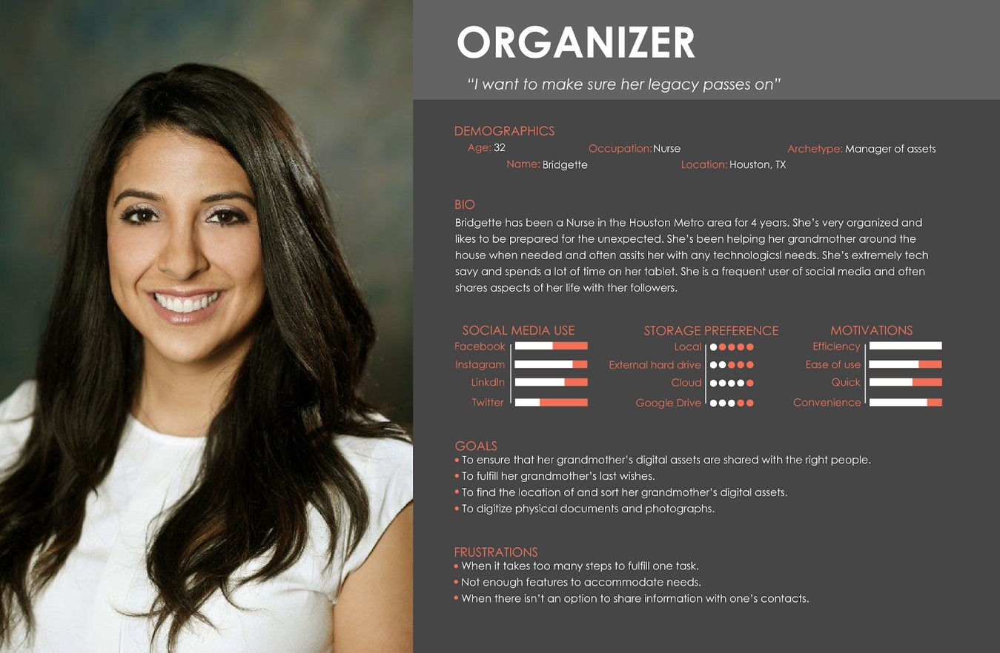

Cloud9
An exploratory research project that aims to understand the user's need for a technology-based solution to help them store, organize, and distribute digital assets post-mortem.
An exploratory research project that aims to understand the user's need for a technology-based solution to help them store, organize, and distribute digital assets post-mortem.

Role
- Creating protocols for participant observations, interviews, and surveys
- Conducting observations, interviews, and surveys
- Analyzing results
- Assimilating reports
Team
- Rahul Kapoor
- Marquis Lawton
- Tanae Burton
- Samantha Wanamaker
Duration
10 weeks
The widespread adoption of technologies and social media brings to question, what will happen to these digital assets (digital photos, videos, documents, etc.) after the users pass away? In this project, we explored user needs for a technology addressing this problem that considers the wishes of the deceased person. We began this project with scenario-based observations of eight participants. Our scenario asked participants to imagine themselves helping their critically ill aunt with their digital assets. We organized our notes from the observations using the AEIOU (activities, environment, interactions, objects, and users) framework.
After performing our observations, we recruited eight new participants to take part in interviews. After receiving consent, we asked them questions about storing/sharing digital assets, potential preparations for assets after passing, and about any accounts they may have. We analyzed our interview by coding, creating an affinity diagram on Mural.com, spectrums, and personas.
In the final stage of our research, we performed a survey with 47 participants. We asked them questions about how their digital assets should be handled after they died, as well as their comfort level with someone else handling them. We also asked if participants were interested in digital memorials created in their honor as well as their social media use. From our findings, we learned that users prefer their artifacts to be handled by the following in order: friends, siblings, then parents. We also learned that users like the idea of memorials but would not want to make one for themselves, and the management of their social media accounts are not very important.
Major implications of the design of our technology are as follows:
• ‘How-to’ guide – All users encountered difficulty when it came to finding information on how to organize social media presence. Based on this finding we would need to have precise instructions or recommendations on how to organize social media accounts when developing and designing this product.
• Consolidation feature – Several users wanted a feature to consolidate their social media accounts.
• Cloud service – All our participants stored their digital assets in the cloud. This finding indicated that our product would have to be a cloud-based product that is easily accessible from the participant’s browsers.
• Dead man’s switch – Users wanted a feature where preselected files and/or accounts will be deleted once they are gone. Any design will need to include a feature where users can select what files or accounts to keep or delete, and a private key that they or a designated individual can input to activate this feature.
• Memorial page creation – From our observations, and interviews we determined that participants had a favorable view towards online memorial pages, and many would like one created for them in the event of their passing. However, the surveys found that only half of the respondents would want to set up a memorial page for themselves. This indicated that our design should include an optional feature of creating a memorial page that will showcase and present digital artifacts that users designate.
We began our exploration by observering how participants would share their loved one's digital artifacts in preparation for their loved one's passing. We recruited eight participants through social media. Due to the Covid-19 epidemic, we conducted our observations through Zoom.
We then sent each participant a document with written instructions and stock photos to for use in a solving a scenario-based problem:
Imagine your aunt, an avid photographer and writer, is critically ill; everyone in the family is distraught and shocked at how swiftly her condition worsened. You, being the most versed in technology, are asked to help your aunt with organizing her digital assets and social media accounts so she can share her collected artifacts with her family and friends when she is gone.
After presenting the scenario, we gave them two tasks: (1) Using the photos we sent earlier, please demonstrate, while sharing your screen, how you would store and share these sentimental digital files, the photo's of your aunt's 50th birthday with your aunt's close family members once she is gone; (2) Show how you would help your aunt organize her social media presence.
From there, we organized our observations into the AEIOU framework to categorize our findings using Stormboard, an online affinity diagramming tool. We then summarized common steps into a flow diagram.

In our observations, we noted that most participants uploaded the stock photos to a cloud service (e.g Google Drive or Adobe Lightroom) in order to share the photos.

Our participants prefered to also use the cloud for storing their digital artifacts, while some also placed the artifacts in a secondary location such as their local computer drive or an external drive. When participants stored the digital artifacts, they created folders and most labled it "Aunt's 50th Birthday" in order to keep their directories organized. This along with the previous finding, implies that a product geared towards storing and sharing digital assets will be cloud-based and accessible from a web browser.

Participants came to various conclusions when deciding how they would organize their aunt's social media and digital artifacts. Three participants stated that they would go through the artifacts with their aunt to choose what to keep and what to delete. While others mentioned creating a memorial page, emailing or storing all the digital assets on the cloud so they could share the link with their family.

Many participants remarked that they did not know how they would go about completing the tasks that were presented. We observed that participants would turn to Google in order to find ideas and some wanted written instructions or checklists on what they should do. One of our participants mentioned how he had many different accounts and the trouble it would be to go through each of them. These comments implied that users would benefit from a product that has clear instructions and recommendations on what can be included under social media presence such as Facebook, Instagram, and Kakao. This product should also have the ability to consolidate and access all of a user’s accounts from one place.
We then created a flow diagram to depict how our participants stored and shared digital artifacts.

Next, we interviewed eight new participants to gain a deeper insight in to how users currently store their digital artifacts and what they will do with either their own or their loved one's digital assets in the event of death. We also asked for their experiece, if any, of veiwing or creating a memorial page or an obituary. The interviews were conducted through Zoom.
We transcribed our interviews then uploaded them to Atlas.ti. We did structural coding, individual open coding, and organized our codes into themes using a Mural Board. From this information, we built our personas.
Our insight on how participants store their data mirrored the findings in our observations: cloud storage is the most prominent method of saving artifacts. Similarly, most participants organized their digital artifacts in some way, either chronologically or thematically. This implies that our product would need a way for users to organize the digital artifacts that they upload on to our product. Passwords was a new insight we explored. Three participants revealed that they store their passwords in a password manager or written down. Half of the participants admitted that they use the same passwords with slight variations for almost all of their accounts. These insights revealed that our technology would need users to be able to input their passwords so that their loved ones will be able to access their accounts after their death.
All but one participant, stated that they would want a family member or a close friend to manage their digital assets after they pass. One participant stated that they would want "somebody external and professional" to avoid placing the responsibility of managing their assets to their husband or friends while they are grieving. Four participants stated that they would want to leave behind some form of instruction for their loved one to dictate what they should do with their digital assets. Some participants specifically mentioned that they would leave behind instructions on what should be deleted after they die. This implies that our product should include a "dead-man's switch" where digital artifacts or social media accounts that users want to be deleted after their death will be automatically deleted without having been viewed by others.
We also gleaned insight into how participant's view memorial pages. Some participants found memorial pages to be "heartwarming" and "beautiful" and a way to facilitate connections between people, especially those that did not get to attend the funeral. Others expressed differing opinions. One participant remarked that memorial pages seem "impersonal" while another participant said that "it looked like a frozen social media page".
Two participants mentioned creating a memorial page for their loved one; both said that they were made through the funeral home. The memorial page was made through the funeral home website where the participants filled out information about their loved one and the memorial page was automatically generated with that information. Both participants said they received a link that they could use to share the memorial page.
When asked what type of digital artifacts they would want to share, three participants stated that they would want to share their life’s work with friends and family after they pass. One participant explained, “I think because it's something that I put my heart and soul into, I think it'd be kind of cool if they had like a piece of that... like some sort of momentum for them to keep and remember me by.” Others mentioned that they would want to share their photos or videos. One participant explained his reasoning behind his choice, “I wish I had that from some of my grandparents, you know, some kind of evidence of what I did.”
While before we had focused on the storing and sharing of digital artifacts in prepartion of death, now we began to think of how we could display these chosen digital artifacts for public view in order for all family members and acquaintances to participate.
The preparer are users that are using the product to organize their social media and digital artifacts in preparation for their passing. They have a lot of digital assets stored across various locations.
The organizer are users that are using the product to organize another person's social media or digital artifacts either in preparation for this person's passing or after this person has passed. They will have to find and upload digital artifacts that this person wants in their package.
We conducted surveys for our next step. We recruited participants through the DePaul University CDM/COMM Participant Pool, and through friends and family on social media. To participate in the study, users had to be at least 18 years old, and must use at least one of the following social media accounts: Facebook, Instagram, LinkedIn, Snapchat, Twitter, Reddit, or Pinterest. Forty-five participants completed the survey (28 female-identifying, 16 male-identifying, and 1 who identifies as other). The ages ranged from 19 to 55.
We wanted to explore more into how prepared people are, regarding their digital artifacts, for their passing. We also measured the level of comfort people had about other individuals being able to access their digital artifacts or accounts and if they had items they wish to have deleted when they die. We also explored receptiveness of creating a memorial page to display their digital artifacts.
We used Excel and R Studio to analyze our data. Based upon our observation and interview phases we formed four hypotheses for inferential statistical analysis:
1. People feel more comfortable with their loved ones accessing their digital artifacts compared to others.
2. Users have digital artifacts that they would like to be deleted upon their death.
3. Users feel more prepared for their death as they age.
4. The more social media accounts a user has the more likely they would want a social media deletion feature.
This insight regarding deletion of artifacts in preparation for death was further explored in our surveys. Of 45 participants, 25 said that they do have files they would want deleted in the event of their passing. In addition, 24 participants said they would be interested in an automated deletion of artifacts, however only 17 participants were interested in automated deletion of their social media accounts.
To explore our hypothesis that people who are older are more prepared for their passing, we used a CHI square test and we found no significance, we determined that age was not a factor, X2 (120, N = 45) = 106.43, p = .81.
A Kruskal-Wallace test comparing the number of social media accounts a participant stated they owned and their willingness for an automatic deletion of social media was not significant, H(1) = 1.62, p=.81.
We asked respondents to rank (Likert scale from 1-5) how comfortable they would be with one of the listed persons (parents, siblings, extended family, friends, professional) curating their digital artifacts after their passing (see figure 3). The results showed that respondents would prefer their siblings to curate their digital artifacts. Parents and friends were the second most preferred.

Figure3
Survey respondents were asked if they ever had a conversation with their loved one regarding distribution of their own or their loved one’s artifacts after death: most (35 of 45) have not have this conversation. Similarly, most (34 of 45) participants also did not know their loved one's wishes regarding their digital artifacts and 23 of 45 participants were not sure of the location of their loved one’s artifacts (see figure 4). When asked on the level of preparedness they felt regarding their own digital artifacts, 30 out of 45 participants did not feel confident as their plan for their digital assets.
Figure4
In our survey, 28 out of 45 participants responded that they do not want a memorial page set up after their passing. The 17 participants that did want a memorial page were asked to rate (on a Likert scale from 1-5) which feature they would like to have on their memorial page (see figure 5). Respondents rated photos and videos highly. Having participant’s life’s work, biography, mementos, and posting features was also seen as important features to present.

Figure5
The proliferation of technology-based social media have created a new category of assets; i.e. digitally-based. Additionally, with the development of the Internet, “this digital legacy or digital asset is a reality that lies no longer solely on a hard disk, and may be available in a wide access network” (Gray & Coulton, 2013). It was our aim in this project to understand the user needs for a technology-based solution to help them store, organize, and distribute digital assets after they have passed. We conducted eight observations and followed with eight interviews. We then conducted a survey with 45 participants. We organized our findings into three categories: digital artifact management, access, and preparation. The findings had several implications for design that are discussed in the following sections.
Cloud-Based
There was a prevalence of the use of cloud services in our study. Participants in our observations, stored their digital assets in the cloud using Google Drive, Dropbox, or other services and they shared these assets by generating a link to send to others. This was supported in our interviews as half of the participants mentioned using the cloud to store their digital artifacts. Survey results also showed that respondent’s loved ones store their digital artifacts on the cloud. All the services listed are web-based and do not require a program to be downloaded. This implies that a product geared towards storing and sharing digital assets will be cloud-based and accessible from a web browser.
How-to Guide
We found participants encountered difficulties finding information on how to organize social media presence. Jai and Paul both remarked that they would like a checklist of what they should do and of files that they should prepare in case of death. These comments implied that users would benefit from a product that has clear instructions and recommendations on how users can prepare their digital artifacts before death.
Consolidation
Any solution should also consolidate and access all of a user’s accounts from one place. One of our participantsin our observations mentioned how it would be difficult to manage all his accounts. Four participants during the interviews mentioned that their vision for a product would include a way to input their various accounts such as social media or banking information. This would also include the feature to consolidate passwords.
Dead Man's Switch
Many of our interview participants mentioned that they have files they would want to be deleted once they passed. Gunther mentioned a dead man’s switch or some type of private key that a designated individual could use to send out notifications of their death and to delete files. More than half of our participants (n=25) in our interviews said that they have digital artifacts they would want to be deleted after they pass. This indicated that our design should include a feature to allow users to select which of their files should be kept and shared and which files should be deleted.
Memorial Page Creation
From our observations, and interviews we determined that participants had a favorable view towards online memorial pages and many would like one created for them in the event of their passing. The survey results showed less than half of the respondents (n=17) wanted a memorial page for themselves. This indicated that apart from creating a digital artifact package to be distributed, users would also benefit from having a choice to display chosen artifacts with friends and family. Based on the findings from the surveys the memorial should have features such as guest posting, signing book, and ways to add photos and videos.
Our small sample size of eight participants for each observation and interview portions created limitations in our study. Our participants in the observation and interviews were of similar age (30s) and also from the primary locations of Boston, Chicago, San Jose, and Toronto. We were also limited in our ability to only record desktop observations because many digital assets are stored and shared through people’s phones. Also, our ability to only connect to our participants through video made it difficult to create a more conversational approach in our recordings, leading to a more regimental interview. Limitations in our survey included time restraints and participants skipping certain questions which reduced the number of participant answers we could use in our analysis.
Future work may involve research into additional features. Collaboration and facial recognition of photos to help distribute artifacts to specific individuals were mentioned by our participants during our research and could be looked into to gather more key insights in our product.
I learned a lot from this project. I learned skills in how to observe and how to interview. There was difficulty in figuring out how we would observe participants through Zoom and while we would have also liked to observe how they would go through the tasks on their mobile device, we did end up getting great data from our computer observations. I also learned how to use Qualtrics and the difficulties in creating a survey that will both get usable data and also not create bias. The survey was definitly a trial and error and if we had more time, I would have liked to create another survey to address additional questions that came up from the frist data and questions that we forgot to include. Overall, this was a great exploratory project that really illustrated how to generate data and ideas from that data in order to influnce how a product should develop keeping the users in mind.